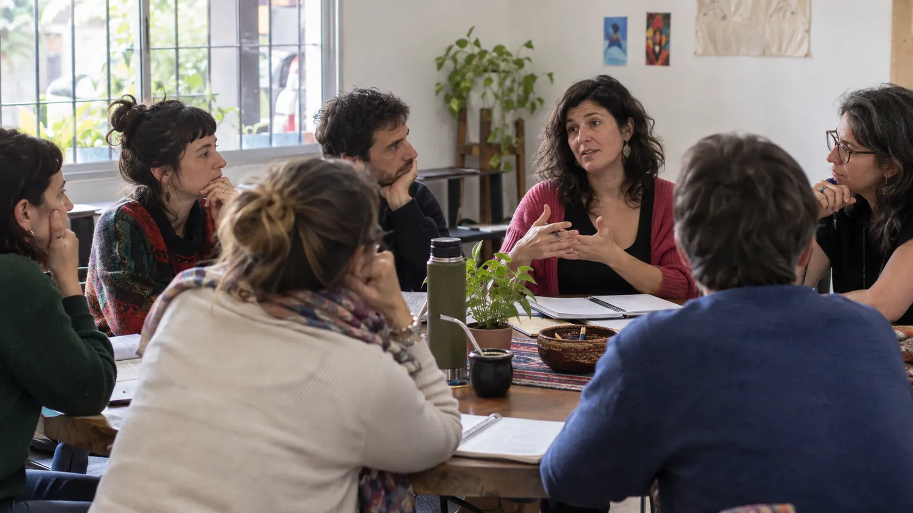

Psicología Social · Acompañamiento Terapéutico · Desarrollo personal
Cursos, talleres y seminarios para aprender y crecer
Propuestas para reflexionar sobre los vínculos, las emociones y la vida cotidiana, con recursos prácticos para usar en tu día a día.
- Presencial en Buenos Aires
- Online en vivo
- Mañana, tarde y noche
Próximos inicios
También: numerología
Encuentros individuales para conocer tu número personal y usarlo como herramienta de autoconocimiento.
(talleres, seminarios y encuentros)
Todas las propuestas
Elegí por tema, día o modalidad: cada propuesta tiene su explicación, su horario y su costo.
No hay propuestas con esos filtros. Probá con otro día o escribime y te cuento qué se viene.

Acompañar(te) no es solamente un espacio de información: es una propuesta que integra aprendizaje, reflexión, participación y construcción de herramientas.
(sobre el espacio)
Un espacio para escuchar, acompañar y construir herramientas
ACOMPAÑAR(TE) es un espacio creado para compartir herramientas, conocimientos y experiencias vinculadas con la Psicología Social, el Acompañamiento Terapéutico, el desarrollo personal, los vínculos y el bienestar integral.
Desde mi formación como Psicóloga Social, Acompañante Terapéutica y Auxiliar en Fonoaudiología, desarrollo propuestas que buscan acercar conocimientos, promover la reflexión y brindar recursos prácticos para la vida cotidiana.
- Psicóloga Social
- Acompañante Terapéutica
- Auxiliar en Fonoaudiología
Mi trabajo se basa en la importancia de:
- 01Escuchar a cada persona y a cada grupo
- 02Acompañar los procesos individuales y grupales
- 03Comprender lo que pasa en la vida cotidiana
- 04Generar espacios para conocerse, aprender y desarrollar las propias posibilidades
Cómo son las propuestas
Talleres temáticos para trabajar distintos aspectos del desarrollo personal, los vínculos, las emociones, el autoconocimiento y la vida cotidiana. Cada taller propone una experiencia participativa, con contenidos claros y actividades que favorecen la reflexión individual y grupal.
- 3 o 4 encuentros
- Semanales, de 1 h 30 a 2 h
- Presenciales, en grupo
Seminarios para profundizar en Psicología Social, Acompañamiento Terapéutico, procesos grupales, comunicación y vínculos. Contenidos teóricos con explicaciones, ejemplos y herramientas para comprender distintas situaciones desde una perspectiva social, humana y educativa.
- De 3 a 6 encuentros
- De 1 h 30 a 3 h por encuentro
- Presenciales u online en vivo
Encuentros de numerología para conocer tu número personal y usarlo como una herramienta más de autoconocimiento y reflexión.
- 1 encuentro de 60 minutos
- Día y horario a coordinar
- Presencial u online
(Abrí un paréntesis en tu semana)
Contame qué te interesa y te paso horarios, costos y cómo inscribirte en la próxima propuesta.
WhatsApp: +54 9 11 5937-1427